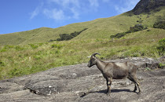
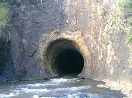
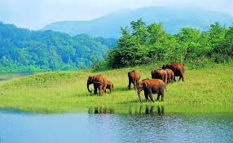
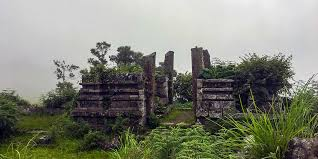

Idukki has an area of 4,358 km2 (1,683 sq mi) and is the second-largest district of Kerala (the largest being Palakkad). Rugged mountains and forests cover about 97 per cent of the total area of the district. The district consists of five taluks: Thodupuzha, Devikulam, Idukki, Udumbanchola, and Peerumedu. The district borders the Kerala districts of Pathanamthitta in the south, Kottayam in the southwest, Ernakulam in the northwest, and Thrissur in the north. Idukki also shares borders with Coimbatore, Dindigul, small parts of Tenkasi, Tiruppur, Theni, and Virudhunagar districts of Tamil Nadu in the east. Idukki is not connected to rail or air networks yet and is accessible only by road. National Highway NH 49 and State highways 13 and 33 passes through the district.[3]Kattappana is the main urban centre in the high ranges of Idukki district, situated about 2,788.71–2,952.76 feet (850.00–900.00 m) above mean sea level and has recently raised to the status of municipality. Kattappana is a CLASS III urban centre. It is the first municipality in high range of Idukki district with the real terraineous touch of Idukki as Thodupuzhamunicipality is situated in low range. Anamudi and Meesapulimala, the two highest peaks in India south of the Himalayas, are located in Idukki district. Anamudi is situated in the Kuttampuzha Panchayat of Adimali Block in the Kannan Devan Hills village of Devikulam taluk. Thirteen other peaks in the district exceed a height of 2,000 m (6,600 ft). Periyar, Thodupuzhayar, Muthirappuzhayar, and Thalayar are the important rivers of the district. Idukki Dam, Asia's largest arch dam, is located in the Idukki Township. The dam is located at the point where the Periyar flows through the gorge formed between two high and massive rocks known as 'Kuravan' and 'Kurathi'. The Idukki Hydroelectric Project caters to more than 60% of the power requirements of the state of Kerala.